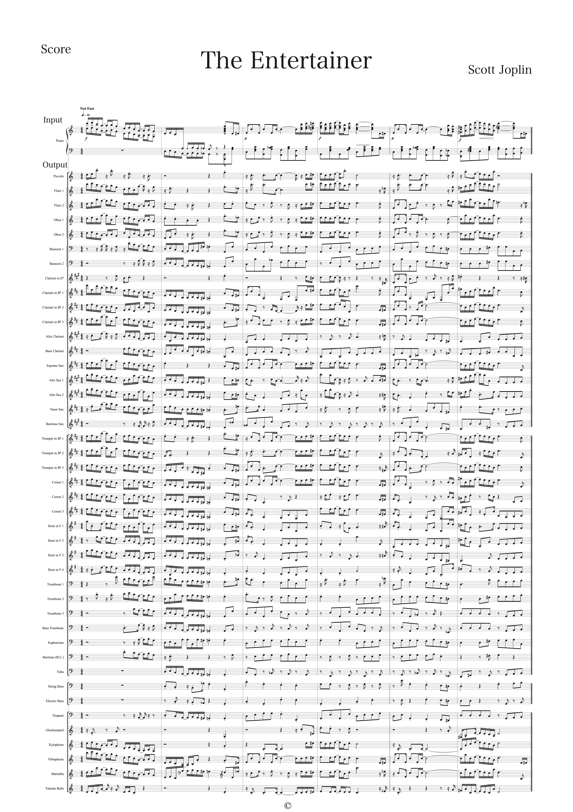
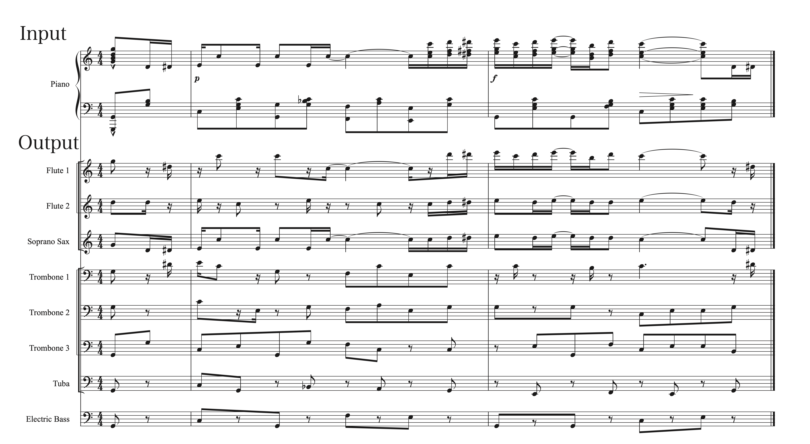

This page is a demo page of "Automatic orchestration of piano scores for wind bands with user-specified instrumentation".
学会発表 / Conference Presentation
- 鍋岡琢渡, 中村栄太, 寺尾萌夢, 吉井和佳
ピアノ譜から吹奏楽譜への楽器編成を指定可能な自動編曲
第85回情報処理学会全国大会(IPSJ), 1T-04, March 2023.
- Takuto Nabeoka, Eita Nakamura, Kazuyoshi Yoshii
Automatic orchestration of piano scores for wind bands with user-specified instrumentation,
Proc. 16th International Symposium on Computer Music Multidisciplinary Research (CMMR), to appear, November 2023.
テストデータ / Test Data
以下の楽曲について、出力結果を示します。Output results are shown for the following song.
- Scott Joplin: The Entertainer
出力 / Output
1. Scott Joplin: The Entertainer
・全28楽器43パート / All 43 parts (28 instruments)

ピアノ譜(入力) / Input Piano Score
吹奏楽譜(出力) / Output Wind Score
・5楽器8パート / 8 parts (5 instruments)

ピアノ譜(入力) / Input Piano Score
吹奏楽譜(出力) / Output Wind Score